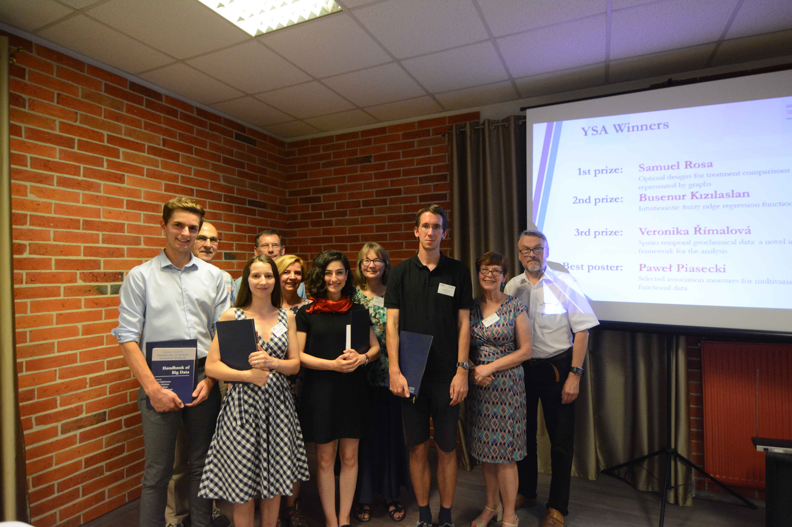

About
I am a research assistant at the Department of Statistics, Marmara University, Turkey. In 2020, I obtained my PhD degree from Yıldız Technical University’s Department of Statistics, under the direction of Erol Eğrioğlu and Atif Evren, and I received my master and bachelor degrees from Mimar Sinan Fine Arts University, Department of Statistics, under the direction of Erol Eğrioğlu and Barış Aşıkgil.
In 2018, I won the second prize of Young Scientists Awards by presenting a part of my dissertation at International Conference on Trends and Perspectives in Linear Statistical Inference (LinStat) in Poland.
I am a member of RLadies and a volunteer for LÖSEV. Also, I like baking, especially bread! 👩🏻🍳 and to do yoga thanks to Müge Değirmenci! (Yoga Pan) 💛
